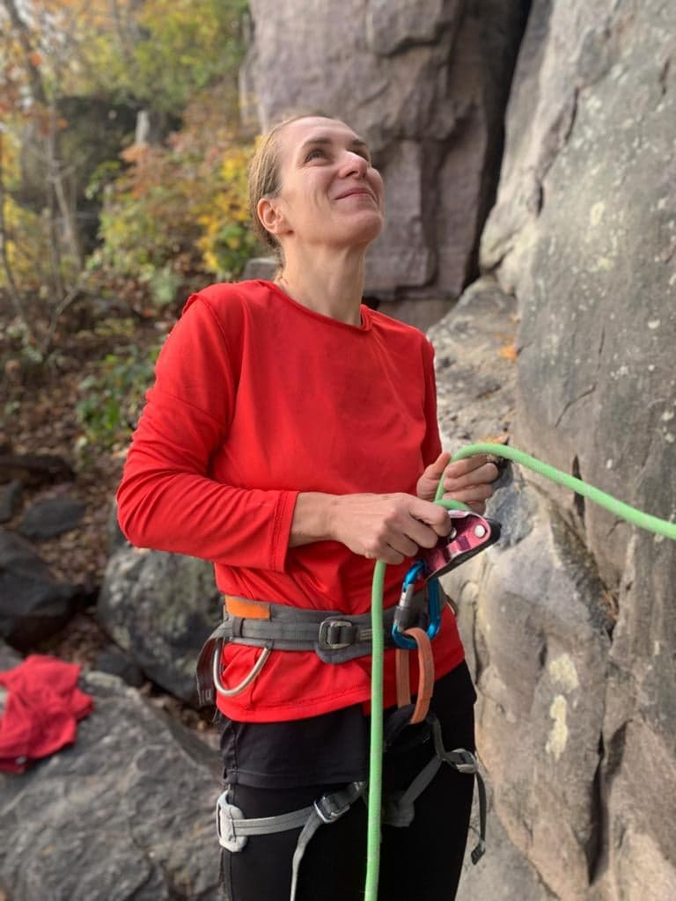

About Me
My name is Marysia and I am an enthusiastic programmer, who has just begun a new journey through the land of coding. I am originally from Poland, and living in US for over 15 years. I currently work as Research Administrator at School of Communication at Northwestern University. I am attending a Coding Bootcamp with intentions to learn all the mysteries behind web and app development. So far-so good, and this is my very first Website project.
My future goal is to help non-profit organizations manage their sponsored projects portfolio by implementing systems and applications that would increase efficiency, effectiveness, and accuracy, provide transparency in grants activities, and assit in better audit preparation. I have a successful track of grants management in non-profit sector and higher education. I would liketo use my knowledge and expertize to create usefull and user-friendly applications for sponsored projects administrator.
When I am not working/studying, I indulge in outdoors activities, including rock climbing, mountain biking, camping and hiking, and ultra running on trails. If weather does not permit, I play bridge or watch classic movies.